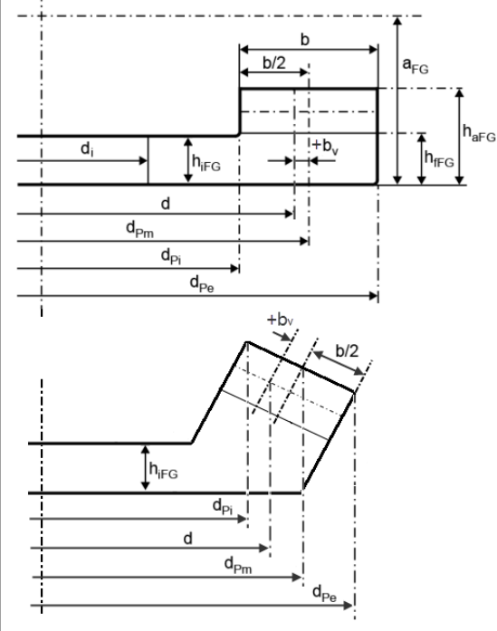

|
|
|


轴向偏置
轴向偏置是小齿轮中心到面齿轮平均直径的距离。
单击 输入字段右侧的"尺寸计算"按钮，可计算面齿轮的最大可能齿宽 b2 及相应的轴向偏置 bv，以使压力角处于预定义范围内。

图 17.4：面齿轮的轴向偏置
English Original
Axial offset
The axial offset is the distance from the pinion center to the mean diameter of the face gear.
Click the Sizing button to the right of the input field to calculate the largest possible width of the face gear b2 and the corresponding axial offset bv, so that the pressure angle lies within the predefined limits.
Figure 17.4: Axial offset of the face gear